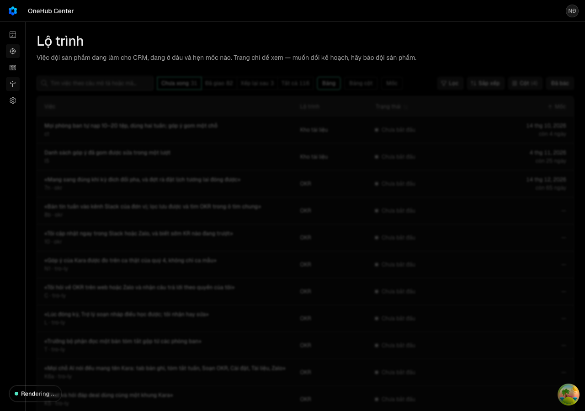
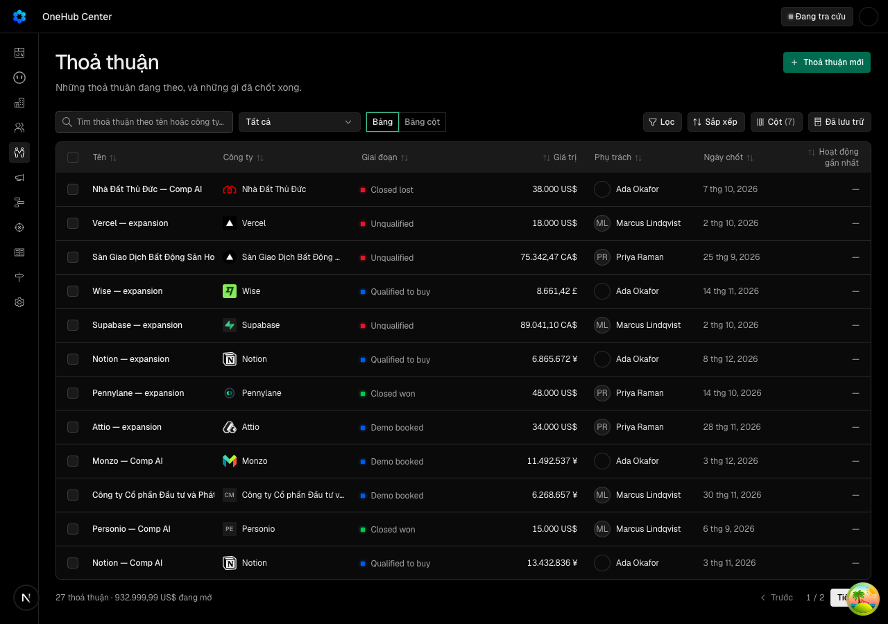
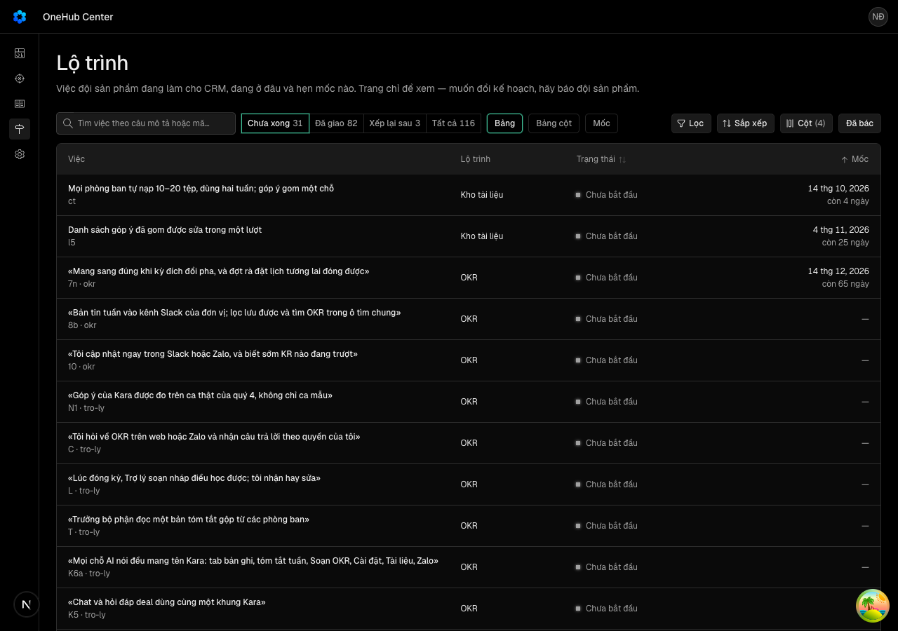
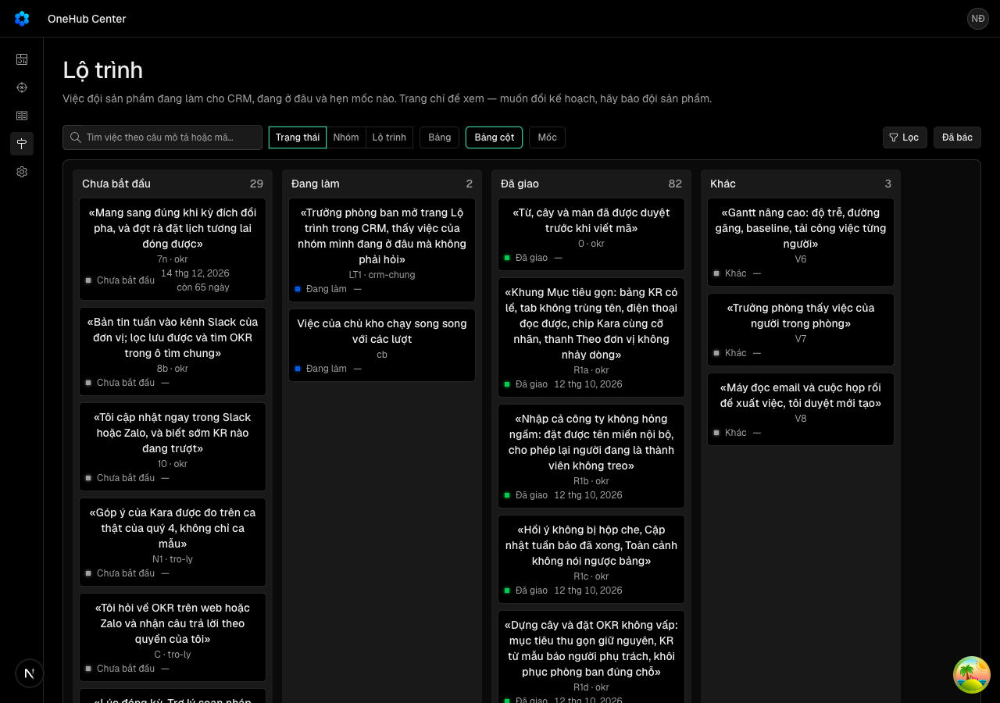
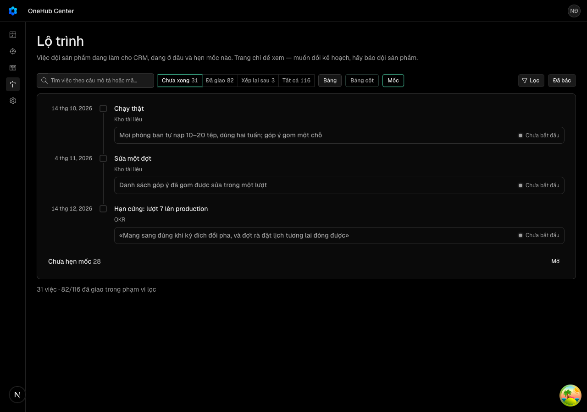
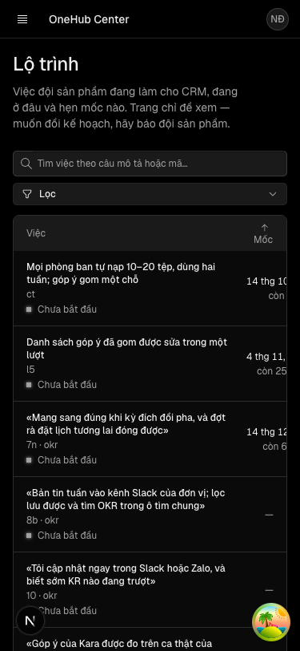
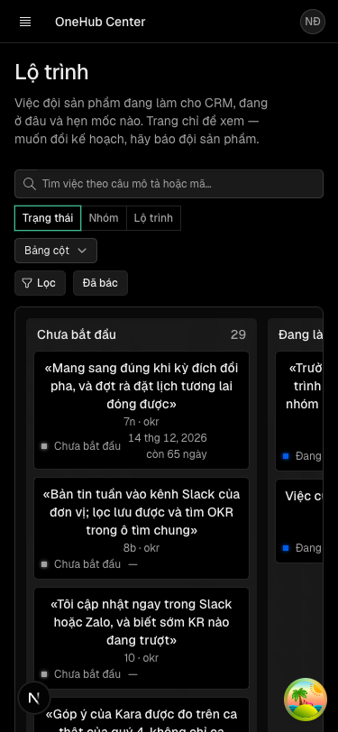
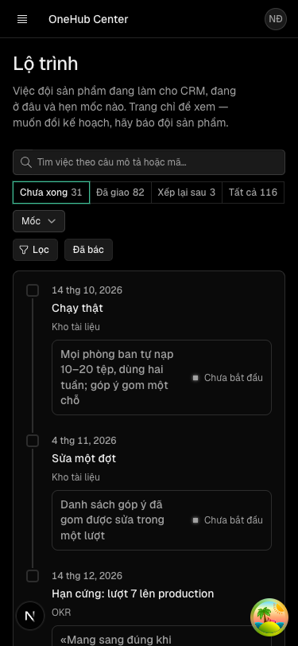

«Trưởng phòng ban mở trang Lộ trình trong CRM, thấy việc của nhóm mình đang ở đâu mà không phải hỏi»
Các eval
| Eval | Tiêu chí | Loại | Verdict | run_id | verified_at |
|---|---|---|---|---|---|
| E1 | AC-1 | test | PASS | minted-trang-lo-trinh-trong-crm-E1-r3 | 2026-10-10T06:40:54Z |
| E2 | AC-2 | test | PASS | minted-trang-lo-trinh-trong-crm-E2-r3 | 2026-10-10T06:40:54Z |
| E3 | AC-3 | test | PASS | minted-trang-lo-trinh-trong-crm-E3-r3 | 2026-10-10T06:40:54Z |
| E4 | AC-4 | test | PASS | minted-trang-lo-trinh-trong-crm-E4-r3 | 2026-10-10T06:40:54Z |
| E5 | AC-5 | test | PASS | minted-trang-lo-trinh-trong-crm-E5-r3 | 2026-10-10T06:40:54Z |
| E6 | AC-6 | test | PASS | minted-trang-lo-trinh-trong-crm-E6-r3 | 2026-10-10T06:40:54Z |
| E7 | AC-7 | test | PASS | minted-trang-lo-trinh-trong-crm-E7-r3 | 2026-10-10T06:40:54Z |
| E8 | AC-8 | test | PASS | minted-trang-lo-trinh-trong-crm-E8-r3 | 2026-10-10T06:40:54Z |
| E9 | AC-9 | script | PASS | minted-trang-lo-trinh-trong-crm-E9-r3 | 2026-10-10T06:40:54Z |
| E10 | AC-10 | test | PASS | minted-trang-lo-trinh-trong-crm-E10-r3 | 2026-10-10T06:40:54Z |
| E11 | AC-11 | script | PASS | minted-trang-lo-trinh-trong-crm-E11-r3 | 2026-10-10T06:40:54Z |
| E12 | AC-12 | test | PASS | minted-trang-lo-trinh-trong-crm-E12-r3 | 2026-10-10T06:40:54Z |
| E13 | AC-13 | ui-check | PASS | minted-trang-lo-trinh-trong-crm-E13-r3 | 2026-10-10T06:40:54Z |
| E14 | AC-14 | judgment | PASS | — | — |
| E15 | AC-13 | script | PASS | design-gate-993d036a9d,design-gate-f4c315b313 | 2026-10-10T06:40:54Z |
| E16 | AC-1 | script | PASS | minted-trang-lo-trinh-trong-crm-E16-r3 | 2026-10-10T06:40:54Z |
| E17 | AC-14 | script | PASS | minted-trang-lo-trinh-trong-crm-E17-r3 | 2026-10-10T06:40:54Z |
Chi tiết từng eval
PASS E1 · test
AC-1: Given `LO-TRINH.html` ở gốc kho mang khối dữ liệu phiên bản 1, When một thành viên mở «Lộ trình» và chọn thẻ «Tất cả», Then danh sách (qua mọi trang) có đúng một dòng cho mỗi hàng của mọi lộ trình trong khối — không thừa không thiếu — và mỗi dòng mang đúng mã, câu giao, nhóm, tên lộ trình của hàng đó; nhãn trạng thái chính là nhóm trạng thái của hàng (Chưa bắt đầu / Đang làm / Đã giao / Khác) và chữ trạng thái của khối hiện thành dòng phụ khi nó khác các chữ cùng nghĩa.
Ran 4 tests across 1 file. [1496.00ms]
PASS E2 · test
AC-2: Given trang vừa mở, When không chọn gì, Then thẻ vòng đời «Chưa xong» đang chọn và danh sách chỉ gồm việc ở nhóm Chưa bắt đầu hoặc Đang làm, xếp theo ngày mốc gần nhất (việc chưa hẹn mốc xuống cuối); When chọn «Đã giao», «Xếp lại sau» hay «Tất cả», Then danh sách đổi đúng theo nhóm trạng thái, số đếm của từng thẻ bằng số việc tương ứng, và đường dẫn mang thẻ đã chọn.
Ran 1 test across 1 file. [898.00ms]
PASS E3 · test
AC-3: Given danh sách, When chọn trong «Lọc» một hay nhiều giá trị của Lộ trình, Nhóm, Mốc (Mốc gồm «Trễ mốc», từng mốc có việc, «Chưa hẹn mốc»), Then chỉ còn việc thoả cùng lúc mọi chiều đã chọn, số đếm cạnh mỗi lựa chọn đúng với các chiều còn lại, đường dẫn mang bộ lọc và mở lại ra cùng danh sách; When gõ vào ô tìm, Then chỉ còn việc có câu giao hoặc mã chứa chữ đã gõ; giá trị lạ trên đường dẫn bị bỏ qua.
Ran 2 tests across 1 file. [1.85s]
PASS E4 · test
AC-4: Given hôm nay theo máy người xem là D, When trang hiện việc chưa giao có mốc, Then dưới ngày mốc ghi «còn n ngày» (n = số ngày từ D tới mốc), «hôm nay» khi đúng ngày, hoặc nhãn «Trễ n ngày» khi việc nằm trong danh sách việc trễ mà luật ngày của khối trả về cho D; việc đã giao không có dòng này; n của «Trễ n ngày» là số ngày từ ngày mốc tới D, và không việc chưa giao nào hiện số ngày âm; When có ít nhất một việc trễ trong phạm vi đang lọc theo ô tìm, Lộ trình và Nhóm (không tính thẻ vòng đời và chiều Mốc) và chưa lọc «Trễ mốc», Then trên bảng có khung «n việc đã qua mốc mà chưa giao» với n là số việc trễ trong phạm vi đó, và bấm «Xem việc trễ» đặt Mốc = «Trễ mốc», thẻ = «Tất cả», giữ nguyên ô tìm, Lộ trình, Nhóm — danh sách sau khi bấm có đúng n việc; đúng ở cả giờ Việt Nam lẫn UTC quanh nửa đêm, và phần phụ thuộc ngày không có trong lần dựng ở máy chủ.
Ran 6 tests across 1 file. [1.79s]
PASS E5 · test
AC-5: Given danh sách đã lọc, When chọn «Bảng cột», Then việc xếp thành cột theo «Chia cột theo» (Trạng thái mặc định, Nhóm, Lộ trình), mỗi cột đếm đúng số việc của nó và không kéo-thả được; When chọn «Mốc», Then trang hiện dòng thời gian các mốc có ít nhất một việc khớp bộ lọc, theo ngày tăng dần, mỗi mốc liệt đúng các việc gắn với nó, mốc đã qua được đánh dấu đã qua, và cuối là mục «Chưa hẹn mốc» thu gọn với số đếm đúng.
Ran 2 tests across 1 file. [841.00ms]
PASS E6 · test
AC-6: Given bất kỳ cách xem nào, When bấm một việc (dòng, thẻ, hay việc trong dòng thời gian), Then ngăn hồ sơ bên phải mở với câu giao, mã, lộ trình, nhóm; dải bốn ô Trạng thái · Mốc · Lộ trình · Nhóm; «Coi là thành công khi» và «Vì sao» khi có; ghi chú khi trạng thái lấy từ lời ghi; cờ lệch nguyên văn; «Cần xong trước» và «Việc đang chờ việc này» — bấm một việc trong đó thì ngăn chuyển sang việc ấy; ngăn không hiện dòng lệnh mở việc.
Ran 1 test across 1 file. [2.09s]
PASS E7 · test
AC-7: Given khối có việc đã bác, When bật «Đã bác», Then trang hiện danh sách việc đã bác của mọi lộ trình kèm lý do và tên lộ trình, và tắt thì về đúng danh sách trước đó.
Ran 2 tests across 1 file. [982.00ms]
PASS E8 · test
AC-8: Given `LO-TRINH.html` vắng khỏi bản đang chạy, hoặc không mang khối, hoặc khối không phải JSON, hoặc mang khuôn khác, hoặc có một khoá sai kiểu, When một thành viên mở «Lộ trình», Then trang hiện một khung trống riêng cho từng ca bằng câu thường cho người xem, câu của bộ đọc (ca sai kiểu kèm đường khoá) nằm trong phần gập «Chi tiết cho đội sản phẩm», không có danh sách nào và trang không vỡ; Given khối thiếu một khoá, Then trang coi khoá đó là rỗng đúng như đặc tả khối; Given khối mang phiên bản mới hơn bộ đọc, Then danh sách vẫn hiện kèm một khung cảnh báo; Given một lộ trình mang `loi`, Then trên bảng có khung báo lộ trình đó không tải được (câu lỗi trong phần gập) và việc của các lộ trình khác vẫn hiện.
Ran 1 test across 1 file. [1182.00ms]
PASS E9 · script
AC-9: Given mã của trang, When soát nguồn, Then hàm đọc khối là bản chép nguyên văn hàm `docDuLieu` của bộ kit, khuôn Zod có đúng bộ khoá của bảng khoá phiên bản 1 (không thiếu, không thừa), và không tệp nào của trang đọc hồ sơ `_acceptance/` hay tệp kế hoạch `docs/plan/` — trạng thái chỉ đến từ khối.
DUNG trang khong doc ho so hay tep ke hoach (20 tep)
PASS E10 · test
AC-10: Given một người mang vai chỉ OKR, When họ đăng nhập, Then thanh điều hướng có mục «Lộ trình» và mở được trang (không bị chuyển sang trang ngoài phạm vi); Given thành viên đủ quyền, Then họ cũng thấy và mở được; Given người chưa đăng nhập mở đường dẫn trang, Then họ được đưa về trang đăng nhập.
Ran 3 tests across 3 files. [93.00ms]
PASS E11 · script
AC-11: Given bản dựng production của ứng dụng, When dựng xong, Then danh sách tệp mà đường «Lộ trình» mang theo có `LO-TRINH.html` của chính commit được dựng, và hàm đọc tệp của trang, chạy trong một thư mục chỉ gồm đúng các tệp đường đó mang theo (không có gốc kho bên cạnh), vẫn đọc ra khối dữ liệu.
DUNG ban sao chi gom tep cua ban dung doc ra khoi du lieu
PASS E12 · test
AC-12: Given trang đã hiện ở mọi cách xem, When người xem dùng nó, Then ô nhập duy nhất là ô tìm; không có nút lưu, nút sửa hay lời gọi ghi nào; thẻ của bảng cột không có tay kéo; mọi nút thuộc thanh công cụ, phân trang, khung báo việc trễ, ngăn hồ sơ hay mục gập.
Ran 1 test across 1 file. [834.00ms]
PASS E13 · ui-check
AC-13: Given vai chỉ OKR mở trang trên máy tính (1280px) và điện thoại (375px), When nhìn trang thật, Then thanh công cụ dùng đúng các điều khiển và thứ tự của màn Thoả thuận tại commit được đo (tìm · thẻ vòng đời · cách xem · Lọc · Sắp xếp · Cột · Đã bác) và nằm một hàng ở 1280px; ở 375px thẻ vòng đời gộp vào «Lọc (n)», cột Lộ trình và Trạng thái ẩn, trạng thái hiện dưới câu mô tả trong ô Việc, và thanh công cụ không tràn khung; danh sách, bảng cột, dòng thời gian và ngăn hồ sơ đều hiện ở cả hai khổ, trang không cuộn ngang, và chữ của tệp kế hoạch mang dấu không dịch.









Chín khung của lượt chạy mới được chép vào evidence/ thành E13-step1 đến E13-step9 (1 rail-1280, 2 thanh-cong-cu-deals-1280, 3 bang-1280, 4 bang-cot-1280, 5 moc-1280, 6 bang-375, 7 ho-so-375, 8 bang-cot-375, 9 moc-375). Khung thanh-cong-cu-1280 của Lộ trình không lưu riêng; bang-1280 cho thấy thanh công cụ đó, còn thanh công cụ Thoả thuận nằm ở step2. Ghi chú nhìn (không phải lỗi khẳng định): rail-1280 chụp giữa lúc chuyển trang; ho-so-375 chụp khi ngăn đang trượt vào nên mép phải bị cắt; bang-375 cột Mốc bị cắt một phần trong khung cuộn của bảng, còn scrollWidth của trang là 375. Trình điều khiển là puppeteer, không đọc được mạng nên không có E13-network.txt.
PASS E14 · judgment
AC-14: Given chữ trên trang (tiêu đề, mô tả, nhãn thanh công cụ, nhãn bộ lọc, khung việc trễ, ngăn hồ sơ, các câu khi không có dữ liệu), When một trưởng phòng ban không dùng git đọc, Then mọi nhãn đến từ tệp lời của trang (vi và en đủ khoá, không chữ viết thẳng trong mã), và họ hiểu trang cho biết gì, rằng trang chỉ đọc, và khi không có dữ liệu thì nên báo ai — không gặp tên tệp, tên lệnh hay chữ nội bộ của bộ công cụ. Câu máy của bộ đọc chỉ nằm trong phần gập «Chi tiết cho đội sản phẩm» và không thuộc phạm vi tiêu chí này.
Phán đoán: Panel giữ nguyên từ vòng 2 — đầu vào không đổi, không chấm lại; lý do xem ở vòng 2. Đây là đề xuất của panel, người quyết ở Cổng 2.
PASS E15 · script
AC-13: Given vai chỉ OKR mở trang trên máy tính (1280px) và điện thoại (375px), When nhìn trang thật, Then thanh công cụ dùng đúng các điều khiển và thứ tự của màn Thoả thuận tại commit được đo (tìm · thẻ vòng đời · cách xem · Lọc · Sắp xếp · Cột · Đã bác) và nằm một hàng ở 1280px; ở 375px thẻ vòng đời gộp vào «Lọc (n)», cột Lộ trình và Trạng thái ẩn, trạng thái hiện dưới câu mô tả trong ô Việc, và thanh công cụ không tràn khung; danh sách, bảng cột, dòng thời gian và ngăn hồ sơ đều hiện ở cả hai khổ, trang không cuộn ngang, và chữ của tệp kế hoạch mang dấu không dịch.
design-gate --mode static chay cho tung tep .tsx duoi components/lo-trinh va trang; vong lap ket thuc sach, khong tep nao bi chan.
PASS E16 · script
AC-1: Given `LO-TRINH.html` ở gốc kho mang khối dữ liệu phiên bản 1, When một thành viên mở «Lộ trình» và chọn thẻ «Tất cả», Then danh sách (qua mọi trang) có đúng một dòng cho mỗi hàng của mọi lộ trình trong khối — không thừa không thiếu — và mỗi dòng mang đúng mã, câu giao, nhóm, tên lộ trình của hàng đó; nhãn trạng thái chính là nhóm trạng thái của hàng (Chưa bắt đầu / Đang làm / Đã giao / Khác) và chữ trạng thái của khối hiện thành dòng phụ khi nó khác các chữ cùng nghĩa.
DUNG tệp mẫu khớp bộ vẽ scripts/product-map.mjs
PASS E17 · script
AC-14: Given chữ trên trang (tiêu đề, mô tả, nhãn thanh công cụ, nhãn bộ lọc, khung việc trễ, ngăn hồ sơ, các câu khi không có dữ liệu), When một trưởng phòng ban không dùng git đọc, Then mọi nhãn đến từ tệp lời của trang (vi và en đủ khoá, không chữ viết thẳng trong mã), và họ hiểu trang cho biết gì, rằng trang chỉ đọc, và khi không có dữ liệu thì nên báo ai — không gặp tên tệp, tên lệnh hay chữ nội bộ của bộ công cụ. Câu máy của bộ đọc chỉ nằm trong phần gập «Chi tiết cho đội sản phẩm» và không thuộc phạm vi tiêu chí này.
Ran 137 tests across 1 file. [768.00ms]
Eval không phân biệt (Analyst)
Vòng verify
- Round 1: 16/17 eval máy đạt, E14 chờ phán đoán, hai finding trong hợp đồng (AC-4: ngày mốc không đọc được). Đã sửa ở hai commit edb31f1ab và 119c04140, trả về thi công.
- Round 2: cả 17 eval gắn tiêu chí đều đạt; lệnh suite api thất bại với 11 bài chạm trần 5000ms trong 1672 bài, không gắn eval nào. Hai finding mới trong hợp đồng (AC-5, mốc đã qua lệch khi ngày lẫn lộn). Kết luận REJECT.
- Round 3: cả 17 eval gắn tiêu chí đều đạt, cả bảy lệnh suite xanh (lệnh api đạt lại), không có finding trong hợp đồng. Sửa ở commit 5e4ec4896 (một hàm so mốc cho đường mốc và danh sách). Kết luận PASS.